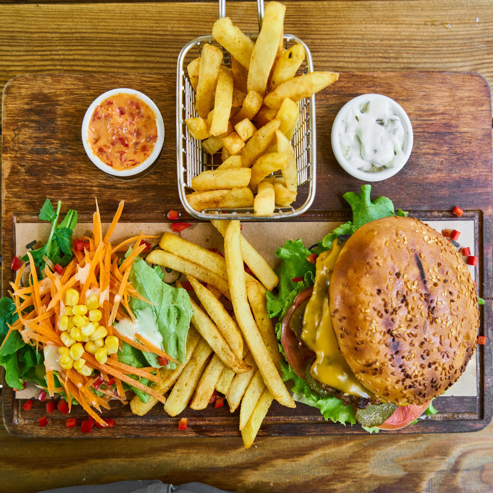

all-natural angus beef*, tillamook® cheddar, lettuce blend, tomatoes, red onions, pickles, the counter relish, brioche bun
all-natural angus beef*, provolone, tomatoes, lettuce blend, fried onion strings, sautéed mushrooms, garlic aioli, brioche bun
all-natural angus beef*, tillamook cheddar, applewood smoked bacon, tomatoes, fried onion strings, hickory bbq, brioche bun
all-natural angus beef*, danish blue cheese, organic mixed greens, tomatoes, bacon onion jam, garlic aioli, brioche bun

all-natural angus beef* filled with melted cheese, caramelized onions, pickles, tangy lucy sauce, brioche bun
vegan veggie, organic mixed greens, red onions, roasted red peppers, alfalfa sprouts, dijon balsamic, multigrain bun
all-natural angus beef*, tillamook cheddar, tomatoes, applewood smoked bacon, sunny side up egg*, sweet sriracha, brioche bun
organic bison*, smoked gouda, bacon onion jam, sunny side up egg*, baby spinach, scallions, house-made thousand island, brioche bun
all-natural ground turkey, jalapeño jack, lettuce blend, dried cranberries, scallions, chipotle aioli, brioche bun